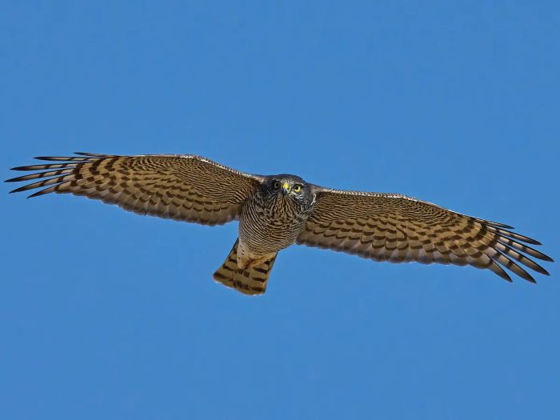

Every one knows the Sparrow-Hawk, the very mention of its name never fails to bring to mind some anecdote connected with its habits, and, as it commits no depredations on poultry, few disturb it, so that the natural increase of the species experiences no check from man.
The sparrowhawk is one of our smallest birds of prey, the male being somewhere between a blackbird and a collared dove in size. The female is larger, up to the size of a feral pigeon. Sparrowhawks are excellent bird hunters, catching small species like finches, sparrows and tits; sometimes they ambush their prey from a perch, while other times they may fly low, suddenly changing direction to fool it.
The sparrowhawk has rounded wings and a relatively long, narrow tail. Males are small with a blue-grey back and white underparts showing reddish-orange barring. Females are much larger, with browner plumage above and grey bars below. They both have reddish cheeks.


The grey francolin also known as "manu moa" or "Chicken Bird" is a species of francolin found in the plains and drier parts of the Indian subcontinent and Iran. This species was formerly also called the grey partridge, not to be confused with the European grey partridge. They are mainly ground-living birds and are found in open cultivated lands as well as scrub forest and their local name of teetar is based on their calls, a loud and repeated Ka-tee-tar...tee-tar which is produced by one or more birds.
Link to Falconary